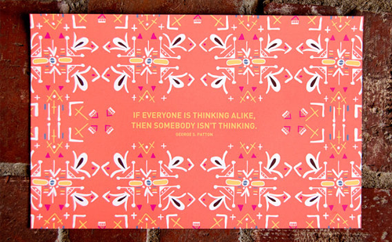
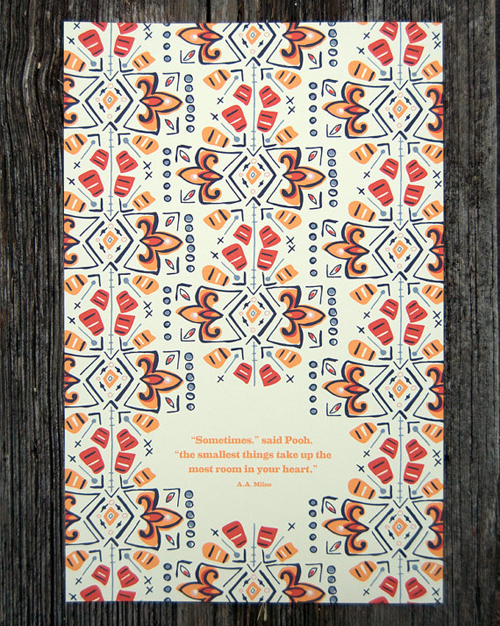

There are many times when less is so much more. This is one of those times. I am completely smitten with the simple, clean and elegant jewelry in Mon Cadeau’s etsy shop. I would LOVE to own each and every one of these pieces. Â Take a look for yourself.
Etsy Spotlight: Little Things Studio
August 1, 2011 by
Little Things Studio is such a fun and whimsical find. It pairs great patterns with lovely quotes from legends such as E.E. Cummings and CoCo Chanel.  I love the words of wisdom on the prints and the unique geometric work. Framed this would add a burst of color and funk to any room.

If Everyone Is Thinking Alike Then Someone Isn’t Thinking

In Order To Be Irreplaceable One Must Always Be Different


It Takes Courage To Grow Up And Be Who You Really Are

Etsy Spotlight: The Miniature Knit Shop
March 31, 2011 by
I ran across the booties from The Miniature Knit Shop first and just about died from the cuteness. Â Then, when I saw them paired with the hats…died again. Â OMG. Â I mean if you aren’t dying right now, you just aren’t human.
Etsy Spotlight: Kinies
March 24, 2011 by

What I am about to show you may just blow your mind because it did mine. Everything I ever thought I knew about a fanny pack is now over, long gone, dunzo…. I mean, does it get any cuter than this?
- Waist Purse– Gray
- Limited Edition Waist Purse
- Waist Purse– Orange
- Waist Purse– Turquoise
- Waist Purse– Blue Gray
Etsy Spotlight: Crazy4Handstamping
March 10, 2011 by

For those of you who missed it, my beautiful sister Der recently had a birthday.  I wanted to get her something very meaningful for her gift this year instead of just another cute clothing item, although we all know how she loves those :). During my quest I came across the Crazy4Handstamping etsy shop. They have soooo many cute items you can personalize, and all of them are very reasonably priced. I went with #1, and it was a huge hit, perfect gift for a new mom! Here are just a few of the options at this shop, they pretty much have something for whatever occasion you are shopping for, or even if you just want one for yourself 🙂
- Name and Date Tag- Handstamped Sterling
- Name and Date Tag w/ Birthstone Dangle
- I Love You to the Moon Handstamped
- Confirmation Baptism Special Occasion Handstamped Sterling Silver Necklace
- The Wedding Locket w/Something Blue
- New Baby- Handstamped Sterling Silver Necklace
- The Runner’s Charm-Sterling Silver Necklace
Etsy Spotlight: Ohjustjess
March 3, 2011 by

I can’t crochet, nor do I think I ever will be able to. Not sure that I have the patience for that, but I sure do admire it. Check out these adorable braided necklaces and the bow ties too! They are the perfect funky accessory for a plain tshirt and jeans for the springtime.
Etsy Spotlight: kjoo
February 22, 2011 by

I happened upon this etsy shop the other day and fell in love with the ring at the top of the picture so much that I can taste it!! Â I’m sure you can tell why I am drawn to this stuff…probably has something to do with the bright colors! Â This is the type of store that I will go through all the sold items just to see all the variety of things they offer. Â Go check out kjoo on etsy!
Etsy Spotlight: OopsIKnitItAgain
January 25, 2011 by

While on the hunt for some cute hats for my little bambino, I ran across this Etsy shop  and fell in LOVE with, well, EVERYTHING! As soon as this baby pops out and we find out the gender, I’m ordering some of these stat…I mean, how cute would they be in the newborn pics!?!?!?!
Pillow Talk
January 25, 2011 by
I ran across these pillows while Christmas shopping and fell in love with the “All is Bright” & “All is Calm” so they immediately were marked favorites for me. Â Then I started thinking and thought, wouldn’t it be a cool idea to have my sons’ names on them and have one in each of their rooms. Â So that’s definitely my plan. Â But I’m a big fan of “Did You Think to Pray”. Â Are you in love with these as much as I am?
Amme and Neb, Etsy
Etsy Spotlight: The Little Lonestar
January 13, 2011 by

I love these shoes because they are absolutely adorable and I love the story behind the gal who makes them because its awesome. Â I actually went to school with the talented gal who makes these. Â Once upon a time she was studying in an aerospace program to become an astronaut. Â She made a very happy and extremely big switch to being a SAHM and creating these little jewels and her love for making these and staying home with her babies bypasses her love for aerospace. Â She realized she was on to something good when she made a pair for her daughter and got stopped everywhere by people wanting to know where they could get a pair.
These would be a unique and absolutely adorable gift for anyone expecting a little girl or that perfect little princess in your life.


Recent Comments